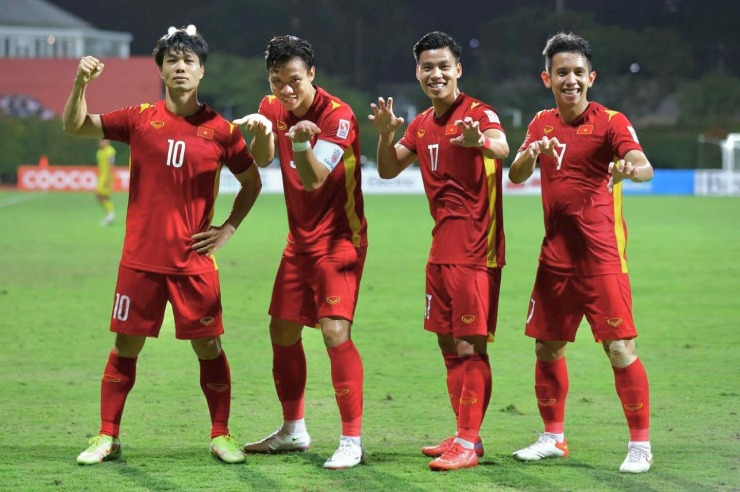

 Dù ĐT Việt Nam không thể bảo vệ thành công chức vô địch AFF Cup, Quế Ngọc Hải vẫn là một trong những "điểm sáng" ở giải đấu này. Lối chơi máu lửa, mạnh mẽ, tì đè tốt, khả năng phán đoán, chọn vị trí xuất sắc của anh mang lại sự chắc chắn cho hàng phòng ngự. Quế Ngọc Hải góp công rất lớn vào thành tích giữ sạch lưới 5/6 trận của thầy trò HLV Park Hang Seo. Chỉ tiếc rằng trận đấu duy nhất thủng lưới là bán kết lượt đi, nơi "chiến binh sao vàng" thua Thái Lan 0-2. Trên thực tế, trung vệ trưởng thành từ Sông Lam Nghệ An không mắc lỗi trong cả 2 bàn thua (trong đó có một bàn thua kém may mắn vì tình huống Hồng Duy trượt chân). Khoảnh khắc anh mặt đối mặt với HLV Polking của Thái Lan ngoài đường biên để bảo vệ các đồng đội, hay "chơi đòn tâm lý" khiến Chanathip sút hỏng phạt đền trong trận đấu này đã để lại ấn tượng cho người hâm mộ. Mới đây, Quế Ngọc Hải còn được website chính thức của AFF Cup bầu chọn là một trong những hậu vệ hay nhất giải, bên cạnh Pratama Arhan, Asnawi Mangkualam (Indonesia), Safuwan Baharudin (Singapore), Theerathon Bunmathan, Krisada Kaman và Narubadin Weerawatnodom (Thái Lan). Nói về màn trình diễn của cầu thủ sinh năm 1993, trang chủ AFF Cup nhận định: "Vốn nổi tiếng là đội bóng có hàng phòng ngự chắc chắn, đội tuyển Việt Nam chỉ thủng lưới 2 bàn trong suốt 6 trận đấu, dù 2 bàn thua đó khiến họ bị Thái Lan loại ở bán kết.
Với 4 sự lựa chọn cho hàng thủ 3 người, mỗi hậu vệ đều đá chính 5 trận nên thật khó để tìm ra ai tốt nhất, nhưng thủ quân Quế Ngọc Hải có vẻ nổi trội hơn một chút. Ngoài khả năng cầm bóng chắc chắn, chọn vị trí và đọc trận đấu, Quế Ngọc Hải còn là cầu thủ có số lần cắt bóng và cản phá dứt điểm nhiều nhất". Trong buổi họp nội bộ mới đây, HLV Park Hang Seo tuyên bố sẽ làm mới ĐT Việt Nam và quyết định không để Quế Ngọc Hải giữ băng đội trưởng chỉ là một phần trong kế hoạch đó. Hiện thầy Park chưa tiết lộ cầu thủ nào được chọn thay thế Quế Ngọc Hải nhưng người hâm mộ kỳ vọng anh vẫn có thể đồng hành cùng đội tuyển. Năm 2022, ĐT Việt Nam sẽ tiếp tục chiến dịch vòng loại thứ 3 World Cup khu vực châu Á. Hơn bao giờ hết, Quế Ngọc Hải vẫn là niềm hy vọng lớn nhất của hàng thủ khi đối đầu những ngôi sao tấn công hàng đầu châu lục, giúp ĐT Việt Nam hướng tới mục tiêu giành điểm số đầu tiên.